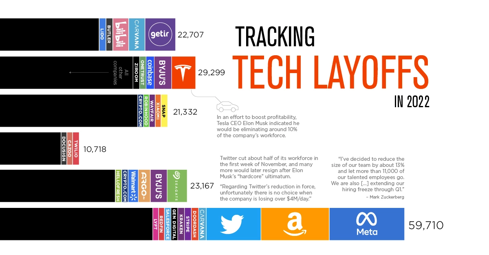

I’m not sure there’s anything I can say that the graphic below doesn’t already say (Source). My co-op job search begins in early January, in a labour market that has been turned on its head in 2022. As of this writing (December 22nd), I have around two weeks until next term’s classes and my job search begin.

Conventional wisdom states that two straightforward ways one can increase their chances of a landing a co-op placement are improving one’s resume (namely through projects) or improving one’s interview skills. I could build a project, but I already have enough projects to fill my resume. Although making a marginally better project would help, I essentially have no experience with technical aspect of a coding interview. The only data structures and algorithms are the very small handful that we covered in CS135 this past term, and even then, I only know how to implement them in Racket. Thus for the next 14 days, I plan on dedicating 8 hours a day of dedicated focus to answer one question: How many data structures and algorithms can I understand and implement before I (hopefully) go for interviews? In other words, how far can I go?
Day 1: December 23
Session 1: 8:00 a.m. - 12:00 p.m.
Hour 1: Learn about Big O Notation. We glossed over this topic in CS135, so I just read through that chapter of Cracking the Coding Interview and made some paper notes to cement my understanding.
Hour 2: Completed what was supposed to be a “warm up” problem - Roman Numerals. Yes, it took me an full hour.
Hours 3-4: Started the next recomended question on LeetCode - Palindrome Linked List. Linked lists are completely foreign to me, so I spent most of these two hours understanding and implementing them in Python.
Session 2: 1:00 p.m. - 5:00 p.m.
Hour 5: Continued practicing linked lists in Python.
Hours 6-7: Attempted Palindrome Linked List, not knowing the solution involved reversing linked lists, which I did not learn. Once I saw the solution, decided to come back to it tomorrow. Spent the remaining time rewriting Roman Numerals to improve efficiency.
Hour 8: Wanted to devote the last two hours learning C++, but I only had an hour left and spent it all trying to make C++ work in Visual Studio Code. When the timer went off, it still wasn’t working, so I had to resolve the issue later that night (new Mac update is cringe).
Day 2: December 24
Session 1: 7:00 a.m. - 12:00 p.m.
Hours 1-3: Went through a 4 hour C++ tutorial for syntax. As I would later discover, it did not go into too much depth in OOP.
Hours 4-5: Started first problem of the day: Design Linked List. There were a lot of edge cases that I missed and had to resubmit quite a few times…
Hour 7: Attempted to learn the linked list implementation in C++, but I found myself having to look up every single line just to understand what it does. Decided to come back to this tomorrow.
Hour 8: Completed Reverse Linked List and feel ready to tackle the palindrome problem from yesterday tomorrow!